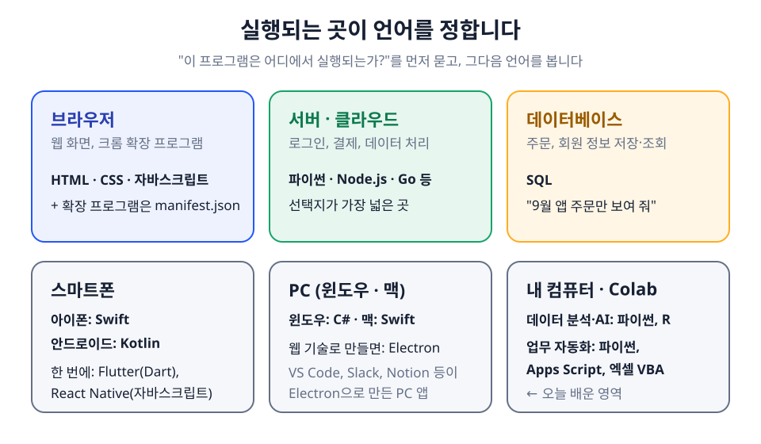
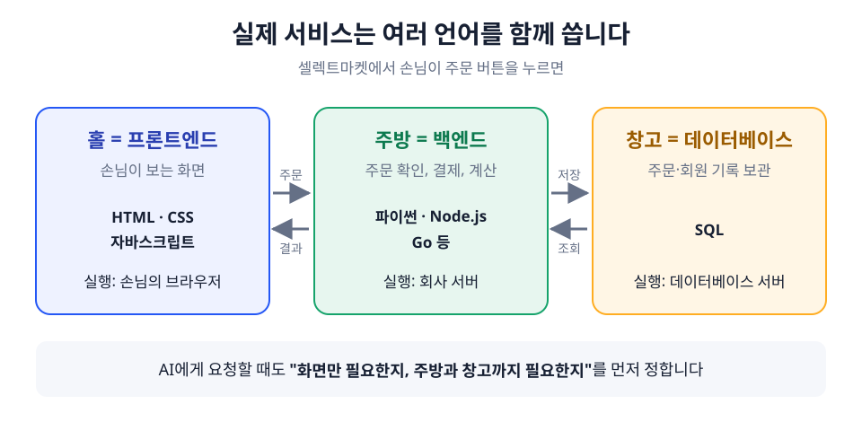

TypeError: can only concatenate str (not "int") to str
✦ 오류 설명
PM PROGRAMMING BASICS · PYTHON · 교안 v1.4 · 2026.10.26 기준
PM을 위한 프로그래밍의 이해
Colab + Gemini + ChatGPT로 파이썬 맛보기
이 수업은 개발자가 되기 위한 수업이 아닙니다. 코드가 어떤 원리로 돌아가는지 직접 실행해 보면서 이해하고, 최신 AI 도구를 끝까지 활용해 결과를 만들고 검증하는 경험을 하는 것이 목표입니다. 이 경험이 있으면 개발자나 AI에게 무엇을 요청해야 하는지, 받은 결과가 맞는지 판단할 수 있게 됩니다.
대상코딩 경험 없는 PM·기획자 (기업·기관 출강)
시간수업 4시간 + 자율 학습·실습 3시간
도구구글 무료 계정 · Google Colab (내장 Gemini AI) · ChatGPT 무료 플랜
OVERVIEW
교육 개요
| 대상 | 코딩 경험 없는 PM·기획자 (기업·기관 출강) |
|---|---|
| 시간 | 수업 4시간 + 자율 학습·실습 3시간 |
| 도구 | 구글 무료 계정 · Google Colab (내장 Gemini AI) · ChatGPT 무료 플랜 |
| 수업이 끝나면 | ① Colab과 내장 AI를 쓸 수 있다 ② 프로그램이 동작하는 원리를 설명할 수 있다 ③ 기초 문법 5가지를 직접 실행하고 개념을 이해한다 ④ 파이썬이 데이터 분석에 쓰이는 이유를 알고 AI로 분석하고 검증한다 ⑤ 오류를 AI와 함께 해결하되 스스로 검증한다 |
PREPARE
수업 전 준비
수업은 브라우저 하나로 진행합니다. 프로그램을 설치하지 않으므로, 계정 두 개만 미리 로그인해 오면 됩니다.
- 구글 계정: 개인 계정을 권장합니다. 회사 계정은 보안 정책 때문에 Colab이나 Gemini 기능이 막혀 있을 수 있습니다. Colab 공식 FAQ에 따르면 Colab의 AI 기능은 구글 계정 연령이 만 18세 이상이어야 쓸 수 있습니다.
- ChatGPT 계정: 무료 버전이어도 충분합니다. 수업 중에 문제가 생기거나, 궁금한 점을 묻고 싶거나, 코드를 개선하고 싶을 때 활용합니다. OpenAI 공식 도움말 기준 무료 버전에서도 최신 기본 모델(GPT-5.6 Luna), 웹 검색, 파일 분석을 쓸 수 있습니다.
- 기기: 크롬 브라우저가 설치된 노트북 (태블릿·휴대폰은 권장하지 않음)
TIMETABLE
타임테이블 (4시간)
수업은 도구를 먼저 익히고, 원리를 이해한 뒤, 직접 코드를 실행해 보고, 실무에 가까운 데이터 분석으로 넘어가는 순서로 구성했습니다. 마지막에는 오류를 검증하는 방법과 파이썬과 웹의 관계를 정리합니다.
| 시간 | 파트 | 내용 |
|---|---|---|
| 0:00–0:35 | Part 0. Colab과 AI 도구 이해하기 | Colab이란 무엇인가, 노트·코드 셀·텍스트 셀의 역할, Colab 속 Gemini, ChatGPT와 함께 쓸 때 주의점 |
| 0:35–0:55 | Part 1. 프로그래밍은 어떻게 동작하나 | 입력, 처리, 출력과 실행 순서 |
| 0:55–1:05 | Part 2. 파이썬은 무엇인가 | 파이썬의 특징, 설치 없이 시작하는 이유 |
| 1:05–1:55 | Part 3. 기초 문법 맛보기 | 먼저 실행하고 나서 개념 이해하기: 변수, 조건, 리스트, 반복, random |
| 1:55–2:05 | 휴식 | |
| 2:05–3:00 | Part 4. 데이터 분석 맛보기 | 왜 데이터 분석에 파이썬을 쓰는가, pandas 직접 써 보기, Gemini에게 분석 맡기고 검증하기 |
| 3:00–3:10 | 휴식 | |
| 3:10–3:50 | Part 5. 기타: 오류 검증 · 웹과의 관계 | 오류 3종류, AI와 함께 오류 해결하기, 파이썬으로 웹을 바로 못 만드는 이유 |
| 3:50–4:00 | 마무리 | 과제 안내, Q&A |
PART 0 · 0:00–0:35
Colab과 AI 도구 이해하기
오늘 수업의 모든 실습은 Google Colab에서 진행합니다. 처음 보는 도구라서 낯설 수 있지만, 꼭 필요한 개념은 몇 가지뿐입니다. 이 파트에서는 Colab이 무엇인지, 화면의 기본 단위가 어떤 역할을 하는지, 그리고 Colab 안에 들어 있는 AI와 ChatGPT를 어떻게 함께 쓸지를 정리합니다.
📘 설명
0-1. Colab이란 무엇인가
Colab(정식 이름 Colaboratory)은 구글이 만든 온라인 코드 실행 노트입니다. 원래 구글 리서치 팀이 연구자들을 위해 만들었고, 2017년에 일반 사용자에게 공개되었습니다. 파이썬 코드를 내 컴퓨터가 아니라 구글의 서버에서 실행해 주기 때문에, 브라우저만 있으면 설치 없이 바로 코딩을 시작할 수 있습니다. 구글 문서처럼 구글 드라이브에 자동 저장되고, 링크로 공유할 수도 있습니다.
| 항목 | 내용 |
|---|---|
| 만든 곳 | Google (Google Research) |
| 요금 | 기본 무료. 구글 계정만 있으면 사용 가능. 더 빠른 컴퓨터 자원이 필요한 사람을 위한 유료 요금제(Colab Pro 등)가 있고, 2026년 9월 22일부터는 Google AI 요금제 구독자에게도 Colab 프리미엄 혜택이 포함되기 시작함. 이 수업은 무료로 충분함 |
| 저장 위치 | 내 구글 드라이브의 "Colab Notebooks" 폴더 |
| 기반 기술 | 데이터 분석가들이 널리 쓰는 "주피터 노트북(Jupyter Notebook)"을 웹에서 쓸 수 있게 만든 것 |
요금제의 가격과 구성은 자주 바뀌므로, 수강생이 물어보면 Colab 공식 요금 안내 페이지에서 최신 정보를 함께 확인합니다.
0-2. 노트, 코드 셀, 텍스트 셀은 무슨 역할인가
Colab 파일 하나를 노트(노트북)라고 부릅니다. 노트는 칸(셀)들이 위에서 아래로 쌓인 문서입니다. 칸에는 두 종류가 있는데, 컴퓨터에게 시키는 일을 적는 코드 셀과 사람이 읽을 설명을 적는 텍스트 셀입니다. 이렇게 나누어 두는 이유는, 코드와 그 코드의 의도·결과 해석을 한 문서 안에서 함께 남길 수 있기 때문입니다. 나중에 내가 다시 보거나 동료에게 공유했을 때 "무엇을 왜 했는지"가 함께 전달됩니다.
| 구성 요소 | 역할 | 왜 필요한가 |
|---|---|---|
| 노트 | 코드, 설명, 실행 결과를 한 파일에 담는 문서 | 작업 과정 전체를 하나의 기록으로 남기고 공유할 수 있음. 기획서 한 장에 근거와 결론이 같이 있는 것과 비슷함 |
| 코드 셀 | 컴퓨터에게 시킬 일을 적는 칸. 실행하면 결과가 칸 바로 아래에 나타남 | 한 번에 전체를 실행하지 않고 한 칸씩 실행하고 확인할 수 있어서, 어디서 문제가 생겼는지 찾기 쉬움 |
| 텍스트 셀 | 사람이 읽는 메모·설명을 적는 칸. 실행되지 않음 | 코드의 의도, 결과 해석, 다음 할 일을 기록. 과제 정리도 여기에 함 |
| 런타임 | 코드를 실제로 실행해 주는 구글 서버와의 연결 | 오래 쓰지 않으면 연결이 끊기고 기억하던 값이 사라짐. 그럴 때는 위에서부터 다시 실행하면 됨 |
기본 조작은 두 가지만 기억하세요. 코드 셀을 실행할 때는 셀 왼쪽의 ▶ 버튼을 누르거나
Shift+Enter를 누릅니다. 노트를 공유할 때는 오른쪽 위 "공유"를 누릅니다.0-3. Colab 속 AI: Gemini
Colab에는 구글의 생성형 AI인 Gemini가 들어 있습니다. 따로 사이트를 열지 않아도, 지금 보고 있는 노트의 코드와 오류를 AI가 직접 읽고 설명하거나 고쳐 줍니다. 이 기능은 한 번에 생긴 것이 아니라 몇 단계에 걸쳐 확대되었습니다.
| 시기 | 공식 발표 내용 | 출처 |
|---|---|---|
| 2023년 5월 | 구글이 Colab에 AI 코드 생성·자동완성·코딩 도우미 기능을 넣겠다고 발표 | Google 공식 블로그 |
| 2025년 3월 | Gemini 기반 "데이터 사이언스 에이전트" 무료 공개. 데이터를 올리고 분석 목표를 말하면 분석 노트를 자동으로 만들어 줌 | Google Developers Blog |
| 2025년 5월 | Google I/O 2025에서 "AI 우선(AI-first) Colab" 공개 | Google Developers Blog |
| 2025년 6월 24일 | AI 우선 Colab을 모든 사용자에게 공개. 대화로 코드 요청·설명, 자연어로 코드 수정, 오류 수정안을 비교 화면(diff)으로 제안 | Google Developers Blog |
| 2026년 4월 8일 | 학습 모드(Learn Mode)와 맞춤 지침(Custom Instructions) 추가. 학습 모드를 켜면 Gemini가 정답 코드를 바로 주는 대신 단계별로 가르쳐 주는 코딩 튜터처럼 동작함 | Google 공식 블로그 |
| 2026년 9월 22일 | Google AI 요금제에 Colab 프리미엄 혜택 포함 (더 빠른 GPU 우선 사용 등). 무료 사용자의 기본 기능은 그대로 | Google Developers Blog |
아래는 Gemini가 들어간 Colab 화면의 구조를 단순하게 그린 예시입니다. Colab 공식 FAQ에 따르면 Gemini 대화창은 노트 화면 하단(푸터)의 Gemini 아이콘으로 열고, AI 기능은 조건에 맞는 사용자에게 기본으로 켜져 있습니다. 실제 버튼의 이름과 위치는 업데이트에 따라 조금씩 다를 수 있습니다.
📒 PM파이썬_홍길동.ipynb공유● 연결됨
📝 텍스트 셀: 오늘의 목표 - 매출 합계 계산해 보기
▶ print("가격:" + 15000)
▶ ✦ 코드를 생성하거나 무엇이든 물어보세요…
✦ Gemini 대화창 학습 모드 ON
나이 에러가 왜 났어?
Gemini문자열과 숫자는 바로 더할 수 없어요. 15000을 글자로 바꾸려면 어떤 함수를 쓰면 될까요? 힌트:
str()✦ Gemini하단 바
그림: Colab 화면 구조 예시 (강사 작성 도식, 실제 화면 아님). 📷 수업 직전 실제 화면 스크린샷으로 교체 예정
| Gemini 기능 | 무엇을 해 주나 | 언제 쓰나 |
|---|---|---|
| 코드 생성 | 말로 요청하면 코드를 써 줌 | "1부터 10까지 더하는 코드 써 줘" |
| 코드·오류 설명 | 코드가 무슨 뜻인지, 에러가 왜 났는지 설명하고 수정안을 제안 | 모르는 코드나 빨간 에러를 만났을 때 |
| 학습 모드 | 답을 바로 주지 않고 힌트와 단계별 설명으로 이끌어 줌 | Part 3 기초 문법. 왕초보에게 가장 추천 (계정·지역에 따라 메뉴가 보이지 않을 수 있음) |
| Gemini 대화창 (데이터 사이언스 에이전트) | 노트 전체를 보고 대화. 데이터를 주고 분석 목표를 말하면 분석 단계를 계획하고 코드를 만들어 줌 | Part 4 데이터 분석 |
0-4. ChatGPT와 함께 쓸 때 알아야 할 것
이 수업에서는 Colab 안의 Gemini와 별도 창의 ChatGPT, 두 개의 AI를 함께 씁니다. Gemini는 지금 노트의 코드와 오류를 직접 보고 답할 수 있다는 장점이 있고, ChatGPT는 개념을 쉬운 말로 풀어 설명받거나, 다른 관점에서 다시 확인할 때 유용합니다. 다만 두 AI를 쓰면 같은 질문에도 서로 다른 답이 나올 수 있다는 점을 미리 알아 두어야 합니다.
- 답이 다를 수 있는 이유: 둘 다 생성형 AI이기 때문입니다. 생성형 AI는 정해진 정답을 찾아오는 것이 아니라, 그때그때 그럴듯한 답을 새로 만들어 냅니다. 그래서 AI가 다르면 답이 다르고, 같은 AI에게 같은 질문을 다시 해도 답이 달라질 수 있습니다.
- AI도 실수합니다: 문법은 맞지만 결과가 틀린 코드를 자신 있게 내놓기도 합니다. 그래서 AI가 준 코드는 반드시 실행해서 결과를 직접 확인해야 합니다.
- 같은 대화 안에서 검증하면 AI는 자기 답을 옹호하는 경향이 있습니다: 코드를 만들어 준 그 대화창에 "이거 맞아?"라고 물으면, AI는 앞서 자신이 한 답에 맞춰 "맞다"고 하기 쉽습니다. 검토를 맡길 때는 새 대화창을 열거나 다른 AI에게 물어보는 것이 좋습니다.
| Colab Gemini | ChatGPT (무료) | |
|---|---|---|
| 강점 | 지금 노트의 코드·오류를 직접 보고 답함 | 개념 설명, 비유, 다른 관점에서 교차 확인 |
| 이 수업에서 쓰는 때 | 코드 생성, 오류 설명·수정, 데이터 분석 | 문제가 생겼을 때, 질문하고 싶을 때, 코드를 개선하고 싶을 때 |
| 주의 | 수정안을 적용하기 전에 무엇이 바뀌는지 읽어 보기 | 코드와 에러를 텍스트로 붙여넣기 (무료 버전의 사용 한도는 OpenAI가 수시로 조정) |
검증 원칙: 두 AI의 답이 다르면 그 차이 자체가 좋은 질문거리입니다. 최종 판단은 AI가 아니라 실행 결과와 내가 기대한 값을 비교해서 내립니다.
🧪 실습
실습 0. Colab 열고 첫 코드 실행하기
colab.research.google.com에 접속해 "새 노트"를 만들고, 노트 이름을 "PM파이썬_내이름"으로 바꾼 뒤 아래 코드를 실행합니다.
① [복사] 버튼을 눌러 코드를 복사합니다.
② Colab 코드 셀에 붙여넣고
② Colab 코드 셀에 붙여넣고
Shift+Enter로 실행합니다.코드 · 복사해서 Colab 코드 셀에 붙여 넣으세요
print("안녕, 파이썬") # 따옴표 안의 글자를 화면에 출력
!python --version # 지금 Colab에 설치된 파이썬 버전 확인③ 실행 결과 확인
안녕, 파이썬 Python 3.x.x ← 숫자는 Colab 환경에 따라 다름
④ 설명: 방금 무슨 일이 일어났나
print()는 괄호 안의 내용을 화면에 보여 주는 명령입니다. 결과가 셀 바로 아래에 나타나면 Colab과 구글 서버가 정상적으로 연결된 것입니다. 둘째 줄 맨 앞의 !는 파이썬 코드가 아니라 Colab 서버에 직접 내리는 명령이라는 표시입니다.
PART 1 · 0:35–0:55
프로그래밍은 어떻게 동작하나
이 파트에서는 프로그램이 움직이는 기본 원리와, 앞으로 모든 실습 코드에 등장할 "주석"이 무엇인지 먼저 이해합니다. 그다음 입력, 처리, 출력이 있는 짧은 코드를 실행해 봅니다.
📘 설명
1-1. 입력, 처리, 출력
프로그래밍은 컴퓨터에게 할 일을 순서대로 적어 주는 일입니다. 컴퓨터는 눈치를 보거나 빠진 부분을 알아서 채우지 않고, 적힌 그대로 위에서 아래로 한 줄씩 실행합니다. 거의 모든 프로그램은 무언가를 받아서(입력), 정해진 규칙대로 계산하고(처리), 결과를 보여주는(출력) 구조로 되어 있습니다. 키오스크에서 메뉴를 고르면(입력) 금액이 계산되고(처리) 영수증이 나오는(출력) 것과 같습니다.
우리가 쓰는 코드는 사람이 읽을 수 있는 글입니다. 이 글을 컴퓨터가 알아듣도록 읽고 실행해 주는 프로그램을 해석기라고 부르며, Colab은 구글 서버에 이 해석기가 이미 준비되어 있는 환경입니다.
1-2. 주석이란 무엇인가
주석은 코드 안에 적어 두는 사람을 위한 메모입니다. 파이썬에서는 # 기호 뒤에 쓴 내용이 주석이 되고, 컴퓨터는 실행할 때 이 부분을 완전히 무시합니다. 그래서 주석에는 "이 줄이 무슨 일을 하는지", "왜 이렇게 했는지"를 한국어로 자유롭게 적을 수 있습니다. 코드는 나중에 나 자신이나 동료가 다시 읽게 되므로, 주석은 기획서의 각주처럼 의도를 남기는 역할을 합니다.
| 구분 | 예시 | 컴퓨터가 실행하나? |
|---|---|---|
| 코드 | price = 15000 | 실행함 |
| 주석 | # 상품 가격을 저장 | 무시함 |
| 코드 + 주석 | price = 15000 # 상품 가격을 저장 | # 앞까지만 실행 |
이 교안의 모든 실습 코드에는 줄마다 주석으로 설명을 달아 두었습니다. 주석은 그대로 복사해 붙여넣어도 실행에 영향을 주지 않습니다. AI가 써 준 코드를 이해할 때도 "줄마다 주석을 달아 줘"라고 요청하면 큰 도움이 됩니다.
🧪 실습
실습 1-1. 주석은 정말 무시될까?
주석이 실행에 영향을 주지 않는지 직접 확인해 봅니다.
① [복사] 버튼을 눌러 코드를 복사합니다.
② Colab 코드 셀에 붙여넣고
② Colab 코드 셀에 붙여넣고
Shift+Enter로 실행합니다.코드 · 복사해서 Colab 코드 셀에 붙여 넣으세요
# 이 줄은 전체가 주석이라 아무 일도 일어나지 않습니다
print("첫 번째 줄") # 이 메모도 무시되고 print만 실행됩니다
# print("이 줄은 실행될까요?")③ 실행 결과 확인
첫 번째 줄
④ 설명: 방금 무슨 일이 일어났나
출력은 한 줄뿐입니다. 셋째 줄은 print가 있지만 맨 앞에 #이 붙어 통째로 주석이 되었기 때문에 실행되지 않았습니다. 셋째 줄의 #을 지우고 다시 실행하면 두 줄이 출력됩니다.
실습 1-2. 입력, 처리, 출력
실행하면 셀 아래에 입력 칸이 나타납니다. 10000을 입력하고 Enter를 누르세요.
① [복사] 버튼을 눌러 코드를 복사합니다.
② Colab 코드 셀에 붙여넣고
② Colab 코드 셀에 붙여넣고
Shift+Enter로 실행합니다.코드 · 복사해서 Colab 코드 셀에 붙여 넣으세요
price = int(input("상품 가격(원): ")) # 입력: 숫자를 받아 price에 저장
total = price * 1.1 # 처리: 부가세 10%를 더한 금액 계산
print("결제 금액:", int(total), "원") # 출력: 소수점을 버리고 화면에 표시③ 실행 결과 확인
상품 가격(원): 10000 결제 금액: 11000 원
④ 설명: 방금 무슨 일이 일어났나
첫째 줄에서 입력받은 10000이 price에 저장되고, 둘째 줄에서 1.1을 곱해 total을 계산하고, 셋째 줄에서 결과를 출력했습니다. 순서가 곧 로직입니다. 셋째 줄을 맨 위로 옮겨 실행해 보면 아직 계산하지 않은 값을 출력하려고 해서 오류가 납니다.
PM 포인트: 기획서의 "사용자가 ○○하면 △△가 보인다"라는 문장이 곧 입력·처리·출력입니다. 처리 규칙이 모호하면 개발자도 AI도 추측해서 만듭니다.
PART 2 · 0:55–1:05
파이썬은 무엇인가
파이썬은 1991년 네덜란드의 프로그래머 귀도 반 로섬이 발표한 프로그래밍 언어입니다. 지금도 계속 발전하고 있어서, 2026년 10월 기준 최신 버전은 파이썬 3.15입니다(3.15.0 정식판 10월 9일, 3.15.1 10월 21일 공개). 문법이 영어 문장에 가깝고 간결해서 처음 배우는 사람에게 가장 많이 권하는 언어 중 하나이고, 동시에 데이터 분석, 업무 자동화, 인공지능 개발 같은 실무 현장에서도 가장 널리 쓰이는 언어입니다. 쉽게 시작할 수 있으면서 실무에서도 바로 쓰인다는 점이 파이썬의 가장 큰 특징입니다.
📘 설명
오늘 수업은 어렵게 하지 않습니다. 보통 개발자들은 파이썬을 배울 때 내 컴퓨터에 파이썬을 설치하고, 코드 편집 프로그램을 깔고, 여러 설정을 맞추는 것부터 시작합니다. 이 과정에서 많은 입문자가 첫 코드도 실행해 보기 전에 지칩니다. 우리는 이 과정을 하지 않아도 됩니다. Colab에 이미 모든 준비가 되어 있기 때문에, 브라우저를 열고 바로 코드를 실행합니다.
| 일반적인 개발자의 시작 | 오늘 우리의 시작 | |
|---|---|---|
| 준비 | 파이썬 설치, 편집기 설치, 환경 설정 | 구글 로그인 후 Colab 열기 |
| 데이터 분석 도구 | pandas 등 도구를 직접 설치 | 이미 설치되어 있음 |
| 막혔을 때 | 검색, 커뮤니티 질문 | Colab Gemini와 ChatGPT에게 바로 질문 |
Colab에 설치된 파이썬 버전은 최신 버전보다 조금 늦게 따라가는 경우가 많습니다. 실습 0에서 확인한 버전이 최신이 아니어도 괜찮습니다. 오늘 배우는 기초 문법은 버전과 관계없이 똑같이 동작합니다.
기억할 것: 오늘의 목표는 문법을 외우는 것이 아니라 "코드가 이렇게 생겼고, 이렇게 실행되는구나"를 손으로 느껴 보는 것입니다.
PART 3 · 1:05–1:55
기초 문법 맛보기
이 파트에서는 개념 설명을 먼저 듣지 않고, 코드를 먼저 실행해 본 다음 방금 무슨 일이 일어났는지를 이해하는 순서로 진행합니다. 직접 결과를 본 뒤에 이름을 붙이면 훨씬 쉽게 기억에 남습니다. 모든 실습은 복사, 붙여넣고 실행, 결과 확인, 설명 읽기의 네 단계로 진행하고, 마지막으로 값을 하나 바꿔 다시 실행해 봅니다.
📘 설명
이해가 안 되는 부분은 Gemini에게 "왜 이렇게 나와?"라고 물어봅니다. 이 파트에서는 Gemini 대화창의 학습 모드를 켜 두는 것을 권장합니다. 정답을 바로 받는 대신 힌트를 받으며 스스로 고치게 되어 실력이 남습니다. 내 화면에 학습 모드가 보이지 않으면 Gemini나 ChatGPT에게 "정답 코드 말고 힌트만 단계별로 줘"라고 요청하면 같은 방식으로 연습할 수 있습니다.
실습 3-1. 변수
실행한 뒤 qty를 5로 바꿔 다시 실행해 보세요.
① [복사] 버튼을 눌러 코드를 복사합니다.
② Colab 코드 셀에 붙여넣고
② Colab 코드 셀에 붙여넣고
Shift+Enter로 실행합니다.코드 · 복사해서 Colab 코드 셀에 붙여 넣으세요
product = "텀블러" # 글자(문자열)는 따옴표로 감싸서 저장 price = 15000 # 숫자는 따옴표 없이 저장 qty = 3 # 수량 print(product, price * qty, "원") # 저장한 이름으로 값을 꺼내 계산하고 출력
③ 실행 결과 확인
텀블러 45000 원
④ 설명: 방금 무슨 일이 일어났나
price = 15000은 15000이라는 값에 price라는 이름표를 붙여 저장한 것입니다. 이렇게 값에 이름을 붙여 저장해 두는 것을 변수라고 합니다. qty를 5로 바꾸면 결과가 75000으로 바뀝니다. 값을 바꾸면 그 이름을 쓰는 모든 계산이 함께 바뀝니다.
실습 3-2. 조건
실행한 뒤 stock을 3, 10으로 바꿔 가며 결과를 비교해 보세요.
① [복사] 버튼을 눌러 코드를 복사합니다.
② Colab 코드 셀에 붙여넣고
② Colab 코드 셀에 붙여넣고
Shift+Enter로 실행합니다.코드 · 복사해서 Colab 코드 셀에 붙여 넣으세요
stock = 0 # 재고 수량
if stock == 0: # 만약 재고가 0과 같다면 (== 는 "같다"는 비교)
print("품절")
elif stock < 5: # 아니고, 만약 5보다 작다면
print("품절 임박")
else: # 둘 다 아니라면
print("구매 가능")③ 실행 결과 확인
품절
④ 설명: 방금 무슨 일이 일어났나
값에 따라 다른 문장이 출력됩니다. stock이 3이면 "품절 임박", 10이면 "구매 가능"이 나옵니다. 이렇게 상황에 따라 다른 행동을 하게 만드는 것을 조건문이라고 합니다. if 아래 줄이 안쪽으로 들어가 있는 것(들여쓰기)은 "이 조건일 때 실행할 부분"이라는 표시입니다. =는 저장, ==는 비교라는 점에 주의하세요.
실습 3-3. 리스트
여러 값을 한 번에 다루는 방법입니다.
① [복사] 버튼을 눌러 코드를 복사합니다.
② Colab 코드 셀에 붙여넣고
② Colab 코드 셀에 붙여넣고
Shift+Enter로 실행합니다.코드 · 복사해서 Colab 코드 셀에 붙여 넣으세요
menus = ["김치찌개", "돈까스", "쌀국수"] # 대괄호 안에 여러 값을 순서대로 저장
print(menus[0]) # 0번째 = 첫 번째 값 꺼내기
menus.append("비빔밥") # 리스트 끝에 값 추가
print(len(menus), menus) # len()은 개수 세기③ 실행 결과 확인
김치찌개 4 ['김치찌개', '돈까스', '쌀국수', '비빔밥']
④ 설명: 방금 무슨 일이 일어났나
여러 개의 값을 대괄호 안에 순서대로 묶어 하나의 이름으로 저장한 것을 리스트라고 합니다. menus[0]이 첫 번째 값인 이유는 파이썬이 순서를 0부터 세기 때문입니다. menus[1]로 바꿔 실행하면 "돈까스"가 나옵니다.
실습 3-4. 반복
코드는 한 번만 썼는데 결과가 몇 줄 나오는지 보세요.
① [복사] 버튼을 눌러 코드를 복사합니다.
② Colab 코드 셀에 붙여넣고
② Colab 코드 셀에 붙여넣고
Shift+Enter로 실행합니다.코드 · 복사해서 Colab 코드 셀에 붙여 넣으세요
prices = [15000, 9000, 12000] # 가격 리스트
for p in prices: # 리스트에서 값을 하나씩 꺼내 p에 담고 아래를 반복
print(p, "원의 할인가는", int(p * 0.9), "원") # 10% 할인가 계산 후 출력③ 실행 결과 확인
15000 원의 할인가는 13500 원 9000 원의 할인가는 8100 원 12000 원의 할인가는 10800 원
④ 설명: 방금 무슨 일이 일어났나
리스트에 든 값을 하나씩 꺼내 같은 일을 되풀이하게 하는 것을 반복문이라고 합니다. 가격이 3개든 3,000개든 코드는 그대로입니다. 리스트에 가격을 하나 추가해 실행하면 결과도 한 줄 늘어납니다.
실습 3-5. random
같은 셀을 여러 번 실행해 보세요.
① [복사] 버튼을 눌러 코드를 복사합니다.
② Colab 코드 셀에 붙여넣고
② Colab 코드 셀에 붙여넣고
Shift+Enter로 실행합니다.코드 · 복사해서 Colab 코드 셀에 붙여 넣으세요
import random # 파이썬에 들어 있는 "무작위 기능 묶음" 불러오기
menus = ["김치찌개", "돈까스", "쌀국수", "비빔밥"]
print("오늘 점심은", random.choice(menus)) # 리스트에서 하나를 무작위로 골라 출력③ 실행 결과 확인
오늘 점심은 쌀국수 ← 실행할 때마다 달라짐
④ 설명: 방금 무슨 일이 일어났나
import random은 미리 만들어져 있는 기능 묶음을 불러온 것이고, random.choice는 리스트에서 하나를 무작위로 고릅니다. 결과가 매번 달라지는 것이 정상입니다. 이렇게 남이 만들어 둔 기능 묶음을 불러와 쓰는 방식은 Part 4의 데이터 분석에서도 똑같이 쓰입니다.
실습 3-6. 종합하기
지금까지의 다섯 가지를 한 번에 쓰면 상품 목록 화면의 로직이 됩니다.
① [복사] 버튼을 눌러 코드를 복사합니다.
② Colab 코드 셀에 붙여넣고
② Colab 코드 셀에 붙여넣고
Shift+Enter로 실행합니다.코드 · 복사해서 Colab 코드 셀에 붙여 넣으세요
import random # 무작위 기능 불러오기
products = [ # 리스트 안에 상품 정보 묶음을 여러 개 저장
{"name": "텀블러", "price": 15000, "stock": 3},
{"name": "에코백", "price": 9000, "stock": 0},
{"name": "머그컵", "price": 12000, "stock": 5},
]
for p in products: # 상품을 하나씩 꺼내 반복
if p["stock"] == 0: # 재고가 0이면
print(p["name"], "- 품절")
else: # 아니면 가격을 천 단위 쉼표로 표시
print(p["name"], "-", f'{p["price"]:,}원')
print("오늘의 추천:", random.choice(products)["name"]) # 무작위 추천③ 실행 결과 확인
텀블러 - 15,000원 에코백 - 품절 머그컵 - 12,000원 오늘의 추천: 머그컵 ← 마지막 줄은 실행할 때마다 달라짐
④ 설명: 방금 무슨 일이 일어났나
리스트로 데이터를 저장하고, 반복으로 하나씩 꺼내고, 조건으로 품절을 판단하고, random으로 추천했습니다. 그런데 여러 번 실행해 보면 품절인 에코백이 추천되는 경우가 있습니다. 이것이 바로 다음 단계에서 AI와 함께 고칠 "기획 의도와 다른 결과"입니다.
실습 3-7. AI로 고치고 검증하기
Gemini 대화창에 아래처럼 요청하고, Gemini가 고친 코드를 실행합니다.
① [복사] 버튼을 눌러 코드를 복사합니다.
② Colab 코드 셀에 붙여넣고
② Colab 코드 셀에 붙여넣고
Shift+Enter로 실행합니다.프롬프트 · 복사해서 사용하세요
품절 상품은 오늘의 추천에서 빼 줘. 바꾼 줄에는 주석으로 설명을 달아 줘.
③ 실행 결과 확인
(Gemini가 고친 코드를 실행) 에코백이 추천에 한 번도 나오지 않아야 함
④ 설명: 방금 무슨 일이 일어났나
고친 코드를 10번 정도 실행해서 에코백이 한 번도 추천되지 않는지 확인합니다. AI가 고쳤다고 끝난 것이 아니라, 기대한 결과가 실제로 나오는지 실행해서 확인해야 검증이 끝납니다. 이 칸은 코드가 아니라 Gemini에게 보낼 요청 문장입니다.
PM 포인트: 화면 기획의 대부분은 데이터(리스트), 규칙(조건), 반복으로 이루어집니다. 이 단어로 요구사항을 말하면 개발자도 AI도 정확하게 알아듣습니다.
PART 4 · 2:05–3:00
데이터 분석 맛보기
데이터 분석 현장에서는 파이썬이 사실상 표준 도구로 쓰입니다. 먼저 그 이유를 이해하고, 같은 기초 문법이 데이터 분석에서 어떻게 쓰이는지 직접 실행해 본 뒤, Gemini에게 분석을 맡기고 결과를 검증해 봅니다.
📘 설명
4-1. 왜 데이터 분석에는 파이썬을 쓰는가
HTML과 CSS는 화면의 구조와 모양을 정하는 언어여서 계산을 하거나 데이터를 처리할 수 없습니다. 자바스크립트는 계산을 할 수 있지만, 주로 브라우저 안에서 화면을 움직이기 위해 발전해 온 언어라서 대용량 데이터를 다루는 도구가 상대적으로 부족합니다. 파이썬은 오랜 기간 연구자와 분석가들이 데이터를 다루는 도구를 만들고 공유해 온 덕분에, 표 데이터 처리, 통계, 차트, 머신러닝에 필요한 도구가 가장 풍부하게 갖춰져 있습니다.
| HTML / CSS | 자바스크립트 | 파이썬 | |
|---|---|---|---|
| 본래 목적 | 화면 구조와 디자인 | 브라우저 화면의 동작 | 범용 프로그래밍, 데이터 처리 |
| 계산·데이터 처리 | 불가능 | 가능하지만 분석 도구가 적음 | 가능, 분석 도구가 가장 풍부 |
| 대표 분석 도구 | 없음 | 일부 차트 도구 | pandas(표), matplotlib(차트), scikit-learn(머신러닝) |
| 실행 위치 | 브라우저 | 주로 브라우저 | 내 컴퓨터, 서버, Colab |
정리: 화면은 HTML·CSS·자바스크립트, 데이터 분석은 파이썬. 서로 잘하는 일이 다릅니다.
4-2. pandas란
파이썬에서 표 데이터를 다룰 때는 pandas라는 도구 묶음을 씁니다. 엑셀 표를 코드로 다룬다고 생각하면 됩니다. Part 3에서 random을 불러온 것처럼 import로 불러와서 쓰고, Colab에는 이미 설치되어 있습니다. 실습에서는 가상의 굿즈 쇼핑몰 2026년 9월 주문 300건(금액 단위: 원)을 씁니다.
Colab의 코드 셀은 마지막 줄의 결과만 표로 보여 주기 때문에, 아래 실습은 셀을 나눠서 하나씩 실행합니다.
🧪 실습
실습 4-1. 데이터 불러오고 훑어보기
pandas를 불러오고, 인터넷에 있는 CSV 파일을 표로 읽어 옵니다.
① [복사] 버튼을 눌러 코드를 복사합니다.
② Colab 코드 셀에 붙여넣고
② Colab 코드 셀에 붙여넣고
Shift+Enter로 실행합니다.코드 · 복사해서 Colab 코드 셀에 붙여 넣으세요
import pandas as pd # pandas를 불러오고 짧게 pd라고 부르기로 함 url = "https://loreenkim0301.github.io/swy-lecturenote/2610-aiclass-python/homework/04_orders.csv" # 데이터 주소 df = pd.read_csv(url) # CSV를 읽어 표(df)로 저장 df.head() # 앞 5줄만 미리 보기
③ 실행 결과 확인
주문번호 주문일 요일 채널 상품 단가 수량 매출 0 O1021 2026-09-01 화 웹 보조배터리 29000 2 58000 1 O1028 2026-09-01 화 앱 노트 4500 2 9000 2 O1035 2026-09-01 화 앱 노트 4500 4 18000 3 O1056 2026-09-01 화 매장 머그컵 12000 1 12000 4 O1062 2026-09-01 화 매장 노트 4500 4 18000
④ 설명: 방금 무슨 일이 일어났나
df라는 변수에 표 전체가 저장되었습니다. 엑셀의 시트 하나를 통째로 변수에 담은 것과 같습니다. 왼쪽의 0~4는 pandas가 붙인 행 번호이고, 리스트처럼 0부터 셉니다.
실습 4-2. 조건으로 걸러 보기 (필터)
새 코드 셀에서 실행합니다.
① [복사] 버튼을 눌러 코드를 복사합니다.
② Colab 코드 셀에 붙여넣고
② Colab 코드 셀에 붙여넣고
Shift+Enter로 실행합니다.코드 · 복사해서 Colab 코드 셀에 붙여 넣으세요
app = df[df["채널"] == "앱"] # 채널이 "앱"인 행만 골라 app에 저장 (3-2의 == 비교와 같음) len(app) # 몇 건인지 세기
③ 실행 결과 확인
141
④ 설명: 방금 무슨 일이 일어났나
300건 중 앱 주문이 141건입니다. Part 3의 조건문과 같은 == 비교를 표 전체에 한 번에 적용한 것이고, 엑셀의 필터와 같은 기능입니다.
실습 4-3. 묶어서 합계 내기 (피벗)
새 코드 셀에서 실행합니다.
① [복사] 버튼을 눌러 코드를 복사합니다.
② Colab 코드 셀에 붙여넣고
② Colab 코드 셀에 붙여넣고
Shift+Enter로 실행합니다.코드 · 복사해서 Colab 코드 셀에 붙여 넣으세요
df.groupby("채널")["매출"].sum() # 채널별로 묶어서 매출을 모두 더하기③ 실행 결과 확인
채널 매장 1762000 앱 3417500 웹 2667000 Name: 매출, dtype: int64
④ 설명: 방금 무슨 일이 일어났나
Part 3에서는 반복문으로 하나씩 꺼내 계산했지만, pandas의 groupby는 반복문 없이 묶음마다 알아서 계산합니다. 엑셀의 피벗 테이블과 같습니다. 앱 채널 매출이 가장 높습니다.
실습 4-4. 검증하기
AI가 분석했든 내가 분석했든, 숫자가 맞는지 확인하는 습관을 들입니다.
① [복사] 버튼을 눌러 코드를 복사합니다.
② Colab 코드 셀에 붙여넣고
② Colab 코드 셀에 붙여넣고
Shift+Enter로 실행합니다.코드 · 복사해서 Colab 코드 셀에 붙여 넣으세요
print(len(df)) # 전체 행 수: 300이어야 함
print(df["매출"].sum()) # 전체 매출 합계
print(df.groupby("채널")["매출"].sum().sum()) # 채널별 합계를 다시 더한 값: 위와 같아야 함③ 실행 결과 확인
300 7846500 7846500
④ 설명: 방금 무슨 일이 일어났나
전체 행 수가 300건이고, 전체 합계와 채널별 합계를 다시 더한 값이 7,846,500원으로 같습니다. 이렇게 다른 방법으로 계산해서 같은 숫자가 나오는지 비교하는 것이 가장 기본적인 검증입니다.
실습 4-5. Gemini에게 분석 맡기기
Gemini 대화창(데이터 사이언스 에이전트)에 아래처럼 요청하고, Gemini가 제안한 계획과 코드 셀을 하나씩 읽으며 실행합니다.
① [복사] 버튼을 눌러 코드를 복사합니다.
② Colab 코드 셀에 붙여넣고
② Colab 코드 셀에 붙여넣고
Shift+Enter로 실행합니다.프롬프트 · 복사해서 사용하세요
df로 채널별, 요일별 매출을 분석하고 막대그래프로 그려 줘. 코드에는 줄마다 주석을 달아 줘.
③ 실행 결과 확인
(Gemini가 만든 코드 셀과 그래프) 확인할 것: 채널별 합계가 실습 4-3의 결과와 같은가?
④ 설명: 방금 무슨 일이 일어났나
Gemini가 만든 결과의 채널별 합계를 실습 4-3에서 직접 구한 숫자와 비교합니다. 그래프의 한글이 □로 깨져 보이면 Colab 기본 글꼴이 한글을 지원하지 않아서이니, Gemini나 ChatGPT에게 해결 방법을 물어보는 오류 해결 연습으로 활용합니다. 이 칸은 코드가 아니라 Gemini에게 보낼 요청 문장입니다.
PM 포인트: 코드는 AI가 쓸 수 있습니다. PM의 역할은 무엇을 어떤 기준으로 볼지 정하고, 결과가 맞는지 검증하는 것입니다.
PART 5 · 3:10–3:50
기타: 오류 검증 · 웹과의 관계
마지막 파트에서는 두 가지를 정리합니다. 첫째, 코드가 틀렸을 때 그것을 어떻게 알아차리고 확인할 것인가입니다. AI가 코드를 대신 써 주는 시대일수록 이 능력이 더 중요해집니다. 둘째, 오늘 배운 파이썬으로 왜 웹사이트를 바로 만들 수는 없는지, 그리고 웹·앱·크롬 확장 프로그램을 만들려면 어떤 언어가 필요한지 프로그래밍 언어의 세계를 한눈에 정리합니다.
📘 설명
5-1. 오류의 3가지 종류
오류는 크게 세 종류로 나뉩니다. 앞의 두 가지는 빨간 에러 메시지가 나오기 때문에 쉽게 알아챌 수 있고, AI도 잘 고칩니다. 가장 위험한 것은 세 번째인 논리 오류입니다. 에러 없이 실행되지만 결과가 틀리기 때문에, "원래 어떤 결과가 나와야 하는지" 아는 사람만 잡아낼 수 있습니다.
| 종류 | 뜻 | 예시 | AI가 잘 잡나? |
|---|---|---|---|
| 문법 오류 | 문장 자체가 틀려 실행 전에 멈춤 | 괄호 누락, 들여쓰기 오류 | 잘 잡음 |
| 실행 오류 | 실행하다가 멈춤 | 문자열과 숫자를 더함 | 잘 잡음 |
| 논리 오류 | 멈추지 않지만 결과가 틀림 | "이상"을 "초과"로 잘못 씀 | 잘 못 잡음. 기대값을 아는 사람이 잡아야 함 |
5-2. 오류 메시지 읽는 법
오류가 나면 셀 아래에 빨간 글씨로 긴 메시지가 나옵니다. 겁먹지 말고 맨 아래 줄부터 읽으세요. 맨 아래 줄에 오류의 이름과 원인이 한 줄로 적혀 있고, 그 위에는 몇 번째 줄에서 문제가 생겼는지가 표시됩니다. 그다음 Colab의 오류 설명 기능이나 ChatGPT에게 물어봅니다. 같은 오류를 두 AI에게 물으면 설명이 다를 수 있으니 비교해 보는 것도 좋은 공부입니다.
5-3. 기대값 테스트란
논리 오류는 에러 메시지가 나오지 않으므로, "이 입력이면 이 결과가 나와야 한다"를 미리 정해 두고 비교해야 찾을 수 있습니다. 파이썬에서는 assert로 이 비교를 적어 둘 수 있습니다. 결과가 기대와 같으면 아무 일도 일어나지 않고, 다르면 오류를 내며 멈춥니다. 기획서의 인수 조건("이 경우엔 이렇게 되어야 한다")과 같은 개념입니다.
🧪 실습
실습 5-1. 실행 오류 내고 읽기
일부러 오류를 내 봅니다.
① [복사] 버튼을 눌러 코드를 복사합니다.
② Colab 코드 셀에 붙여넣고
② Colab 코드 셀에 붙여넣고
Shift+Enter로 실행합니다.코드 · 복사해서 Colab 코드 셀에 붙여 넣으세요
print("가격:" + 15000) # 글자와 숫자를 + 로 이어 붙이려는 코드 (일부러 틀림)③ 오류 확인
TypeError Traceback (most recent call last)
----> 1 print("가격:" + 15000)
TypeError: can only concatenate str (not "int") to str
④ 설명: 방금 무슨 일이 일어났나
맨 아래 줄을 보면 TypeError, 즉 자료의 종류(타입)가 맞지 않는다는 오류입니다. "글자(str)에는 숫자(int)가 아니라 글자만 이어 붙일 수 있다"는 뜻입니다. Colab 오류 설명과 ChatGPT의 설명을 비교한 뒤, print("가격:" + str(15000))처럼 숫자를 글자로 바꿔 다시 실행하면 가격:15000이 출력됩니다.
실습 5-2. 논리 오류를 기대값으로 잡기
규칙은 "3만 원 이상이면 10% 할인"입니다. 에러 없이 실행되는 것처럼 보이지만 숨은 버그가 있습니다.
① [복사] 버튼을 눌러 코드를 복사합니다.
② Colab 코드 셀에 붙여넣고
② Colab 코드 셀에 붙여넣고
Shift+Enter로 실행합니다.코드 · 복사해서 Colab 코드 셀에 붙여 넣으세요
def pay(price): # 결제 금액을 계산하는 기능(함수) 만들기
if price > 30000: # 3만 원 "초과"일 때만 할인 (일부러 넣은 버그)
return price * 0.9 # 10% 할인한 금액을 돌려줌
return price # 할인 대상이 아니면 그대로
assert pay(20000) == 20000 # 2만 원: 할인 없음, 통과
assert pay(40000) == 36000 # 4만 원: 10% 할인, 통과
assert pay(30000) == 27000 # 딱 3만 원: 할인돼야 함, 실패!③ 오류 확인
AssertionError Traceback (most recent call last) ----> 8 assert pay(30000) == 27000 AssertionError:
④ 설명: 방금 무슨 일이 일어났나
앞의 두 줄은 통과했고, 딱 3만 원인 경우에서 멈췄습니다. 규칙은 "이상(>=)"인데 코드는 "초과(>)"로 되어 있어서 3만 원이 할인되지 않은 것입니다. 이런 경계값 실수는 AI도 놓치기 쉬워서, 기대값을 아는 사람이 테스트로 잡아야 합니다. 둘째 줄의 >를 >=로 고치고 다시 실행하면 아무 메시지 없이 끝나는데, 이것이 모든 테스트를 통과했다는 뜻입니다.
실습 5-3. ChatGPT에게 오류 묻기
오류 코드와 기대값을 함께 주어야 정확한 답을 받을 수 있습니다. 검토를 맡길 때는 코드를 만든 대화창이 아니라 새 대화창에서 묻습니다. 아래 템플릿을 복사해 [ ] 부분을 채워 ChatGPT에 보냅니다.
① [복사] 버튼을 눌러 코드를 복사합니다.
② Colab 코드 셀에 붙여넣고
② Colab 코드 셀에 붙여넣고
Shift+Enter로 실행합니다.프롬프트 · 복사해서 사용하세요
나는 코딩을 잘 모르는 PM이야. Google Colab에서 아래 코드를 실행했어. [코드] 기대한 결과: [예: 30000원이면 27000원] 실제 결과/에러: [에러 메시지 전체] 1) 원인을 비유로 쉽게 설명해줘 2) 고친 코드를 줄마다 주석을 달아서 보여줘 3) 고친 게 맞는지 확인할 테스트 케이스도 3개 줘
③ 실행 결과 확인
(ChatGPT의 설명, 고친 코드, 테스트 케이스)
④ 설명: 방금 무슨 일이 일어났나
ChatGPT가 준 코드와 테스트를 Colab에서 직접 실행해서 모두 통과하는지 확인합니다. "돌아간다"와 "맞다"는 다르다는 것을 기억하세요. 이 칸은 코드가 아니라 ChatGPT에게 보낼 요청 문장입니다.
📘 설명
5-4. 파이썬으로 웹사이트를 바로 만들 수 없는 이유
우리가 웹사이트를 볼 때 쓰는 브라우저는 HTML, CSS, 자바스크립트만 알아듣습니다. 파이썬 코드를 브라우저에 그대로 주면 실행되지 않습니다. 파이썬은 브라우저가 아니라 서버나 내 컴퓨터에서 실행되는 언어이기 때문입니다. 파이썬으로 웹 서비스를 만들려면 웹 프레임워크(Flask, Django, Streamlit 등)로 서버를 만들고, 그 서버가 HTML을 만들어 브라우저에 보내도록 해야 하며, 그 서버를 인터넷에 올리는 배포 작업도 따로 필요합니다.
| HTML / CSS / 자바스크립트 | 파이썬 | |
|---|---|---|
| 어디서 실행되나 | 사용자의 브라우저 | 내 컴퓨터, Colab, 서버 |
| 역할 | 화면 | 계산, 데이터 처리, 자동화, 서버 로직 |
비유: HTML은 매장의 진열대, 파이썬은 주방입니다. 손님(브라우저)은 진열대만 보고, 주방은 뒤에서 음식을 만들어 내보냅니다. 오늘 배운 변수·조건·반복·리스트·random은 자바스크립트에도 똑같이 있어서, 화면 프로토타입을 AI에게 요청할 때도 같은 단어로 말하면 됩니다.
5-5. 프로그래밍 언어의 세계: 무엇을 만들려면 어떤 언어가 필요한가
파이썬으로 웹사이트를 바로 만들 수 없다는 것을 알고 나면 자연스럽게 다음 질문이 생깁니다. 그러면 웹을 만들려면, 앱을 만들려면, 크롬 확장 프로그램을 만들려면 어떤 언어가 필요할까요? 프로그래밍 언어는 수백 가지가 있지만, PM이 알아야 할 기준은 하나입니다. "이 프로그램은 어디에서 실행되는가?" 브라우저에서 돌아가는지, 아이폰에서 돌아가는지, 서버에서 돌아가는지에 따라 쓸 수 있는 언어가 거의 정해집니다. 언어를 고르는 것이 아니라, 실행되는 장소가 언어를 정한다고 이해하면 됩니다.

또 하나 기억할 점은, 실제 서비스는 대부분 여러 언어를 함께 쓴다는 것입니다. 사용자가 보는 화면(프론트엔드), 화면 뒤에서 데이터를 처리하는 서버(백엔드), 데이터를 저장하는 데이터베이스가 각각 다른 언어로 만들어지는 경우가 많습니다. 식당으로 치면 홀, 주방, 창고가 각자 다른 도구를 쓰는 것과 같습니다.

만들고 싶은 것별 언어 지도
| 만들고 싶은 것 | 실행되는 곳 | 주로 쓰는 언어·도구 | 한 줄 설명 |
|---|---|---|---|
| 웹사이트 화면 (프론트엔드) | 사용자의 브라우저 | HTML, CSS, 자바스크립트 (규모가 크면 타입스크립트, React 같은 도구) | 브라우저가 알아듣는 언어는 이것뿐이라 선택지가 사실상 정해져 있음 |
| 웹 서비스의 서버 (백엔드) | 회사의 서버, 클라우드 | 파이썬, 자바스크립트(Node.js), Go 등 | 로그인, 결제, 데이터 저장처럼 화면 뒤의 일을 처리. 선택지가 넓음 |
| 데이터 저장·조회 | 데이터베이스 | SQL | "9월 앱 주문만 보여 줘" 같은 질문을 데이터베이스에 던지는 언어. PM이 배우면 가장 바로 쓸모 있는 언어 중 하나 |
| 아이폰 앱 | iOS 기기 | Swift | 애플이 아이폰·아이패드·맥 등 모든 애플 기기용으로 내놓은 언어 |
| 안드로이드 앱 | 안드로이드 기기 | Kotlin (예전에는 자바) | 구글이 안드로이드 앱을 새로 만든다면 Kotlin으로 시작하라고 권장 |
| 아이폰·안드로이드 앱을 한 번에 | 두 기기 모두 | Flutter(Dart 언어), React Native(자바스크립트) | 코드 하나로 두 앱을 만드는 방식. Flutter는 웹·PC 앱까지 같은 코드로 만들 수 있음 |
| 크롬 확장 프로그램 | 크롬 브라우저 | HTML, CSS, 자바스크립트 + 설정 파일(manifest.json) | 웹 화면과 같은 언어로 만듦. 설정 파일에 "어떤 권한이 필요하고 언제 동작하는지"를 적어 둠. 지금은 Manifest V3 규격만 동작함(예전 V2 확장은 2025년 7월 크롬 138부터 사용 중지) |
| PC 프로그램 | 윈도우, 맥 | 윈도우는 C#(또는 C++), 맥은 Swift, 웹 기술로 만들면 자바스크립트(Electron) | VS Code, Slack, Notion 같은 프로그램은 Electron, 즉 웹 기술로 만든 PC 앱 |
| 데이터 분석·AI | 내 컴퓨터, 서버, Colab | 파이썬, SQL, R | 오늘 배운 영역 |
| 업무 자동화 | 내 컴퓨터, 구글 워크스페이스 | 파이썬, Google Apps Script(자바스크립트 기반), 엑셀 VBA | 구글 시트·지메일 자동화는 Apps Script, 엑셀 매크로는 VBA |
| 게임 | PC, 콘솔, 모바일 | C#(Unity), C++(Unreal Engine) | 게임 엔진이 쓰는 언어를 따라감 |
출처 (2026년 10월 26일 KST 확인): MDN(웹 기술 HTML·CSS·자바스크립트) · Node.js · Go: 클라우드·네트워크 서비스 · PostgreSQL: SQL 언어 튜토리얼 · Apple: Swift · Android: Kotlin-first · Flutter FAQ · React Native · Chrome 확장 시작하기 · Manifest V2 지원 종료 일정 · Microsoft: WinUI(C#·C++) · Electron · R · Google Apps Script · Microsoft: Office VBA · Unity 스크립트(C#) · Unreal Engine C++
자주 받는 질문
- Q. 웹을 만들려면 어떤 언어가 필요한가요? 화면만 보여 주는 소개 페이지라면 HTML, CSS, 자바스크립트로 충분합니다. 로그인하고 데이터를 저장하는 서비스라면 여기에 서버 언어(파이썬, 자바스크립트 등)와 데이터베이스(SQL)가 더해집니다.
- Q. 앱을 만들려면요? 아이폰은 Swift, 안드로이드는 Kotlin이 공식 언어입니다. 두 기기를 한 번에 만들고 싶다면 Flutter나 React Native를 씁니다. 앱도 로그인과 저장이 필요하면 웹 서비스처럼 서버가 따로 필요합니다.
- Q. 크롬 확장 프로그램을 만들려면요? 웹 화면과 같은 HTML, CSS, 자바스크립트로 만들고, manifest.json이라는 설정 파일을 함께 둡니다. AI에게 만들어 달라고 할 때는 "Manifest V3로"라고 적어 주세요. 예전 규격(V2)으로 만든 코드는 지금 크롬에서 동작하지 않습니다. 웹 언어를 알면 가장 빠르게 시작할 수 있는 분야입니다.
- Q. 하나만 배운다면 무엇을 배워야 하나요? 목적에 따라 다릅니다. 데이터를 직접 보고 싶은 PM이라면 SQL과 파이썬, 화면 프로토타입을 직접 만들고 싶다면 HTML·CSS·자바스크립트가 가장 효과가 큽니다.
PM 포인트: AI가 코드를 써 주는 시대에도 이 지도는 필요합니다. "앱 만들어 줘"보다 "아이폰과 안드로이드 둘 다 쓸 수 있게 Flutter로, 로그인은 서버에 저장되게"처럼 어디서 실행되고 무엇이 필요한지를 말할 수 있어야 AI와 개발자에게 정확히 요청하고, 일정과 비용도 가늠할 수 있습니다. 오늘 배운 변수, 조건, 반복, 리스트는 이 모든 언어에 똑같이 들어 있으므로, 어떤 언어를 만나도 낯설지 않을 것입니다.
HOMEWORK · 3시간
자율 학습·실습 과제
과제는 수업 내용을 다시 손으로 익히는 것부터 시작해서, 버그를 찾고, 실제 데이터로 분석하는 순서로 난이도가 올라갑니다. 모든 과제에서 AI를 써도 되지만, AI가 준 답을 어떻게 검증했는지를 함께 기록해야 합니다.
| 과제 | 시간 | 내용 | 자료 |
|---|---|---|---|
| 1. 복습 타이핑 | 40분 | Part 3 코드를 새 노트에 직접 타이핑하고, 셀마다 Gemini 설명을 텍스트 셀에 요약 | - |
| 2. 개념 설명문 | 20분 | "왜 데이터 분석엔 파이썬, 화면엔 HTML인가"를 동료 PM에게 설명하듯 5줄로 | - |
| 3. 버그 찾기 | 50분 | 배송비 계산 코드의 논리 오류 2개를 기대값 테스트로 찾기. Gemini와 ChatGPT가 각각 버그를 찾았는지도 기록 | 03_bug_shipping.py |
| 4. 데이터에게 질문하기 | 70분 | Gemini로 주문 300건 분석하고, 직접 쓴 코드로 숫자 검증 | 04_orders.csv · 안내 |
제출: Colab 노트북 오른쪽 위 "공유"에서 "링크가 있는 모든 사용자(뷰어)"로 바꾼 뒤 링크 제출
FOR INSTRUCTOR
강사 체크리스트
- 수업 직전 Colab 실제 화면으로 Gemini 아이콘·학습 모드 메뉴 위치 확인 후 예시 도식을 스크린샷으로 교체
- 수강생 구글 계정이 만 18세 이상으로 등록되어 있는지 사전 안내 (Colab AI 기능 이용 조건)
- 출강 기관 PC·네트워크에서 Colab, Gemini, ChatGPT 접속 가능 여부 사전 확인
- Gemini와 ChatGPT가 서로 다른 답을 주는 사례, AI가 틀리는 사례 각 1개 준비
- 과제 정답은 레포에 올리지 않고 별도 보관
REFERENCE
기준 자료 (2026년 10월 22일 KST 확인)
이 교안의 도구 정보는 아래 공식 발표와 공식 문서를 기준으로 작성했습니다. AI 도구는 기능과 한도가 자주 바뀌므로 수업 직전에 다시 확인합니다.